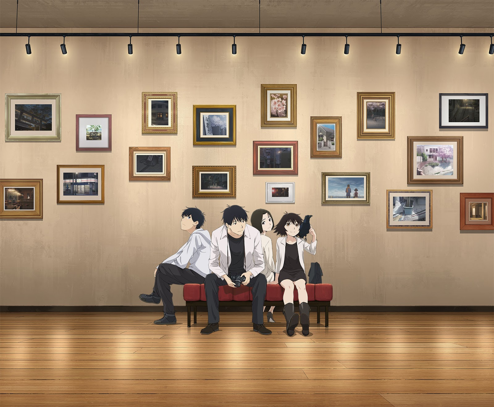
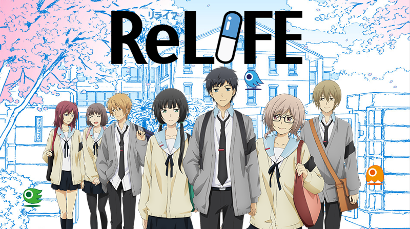
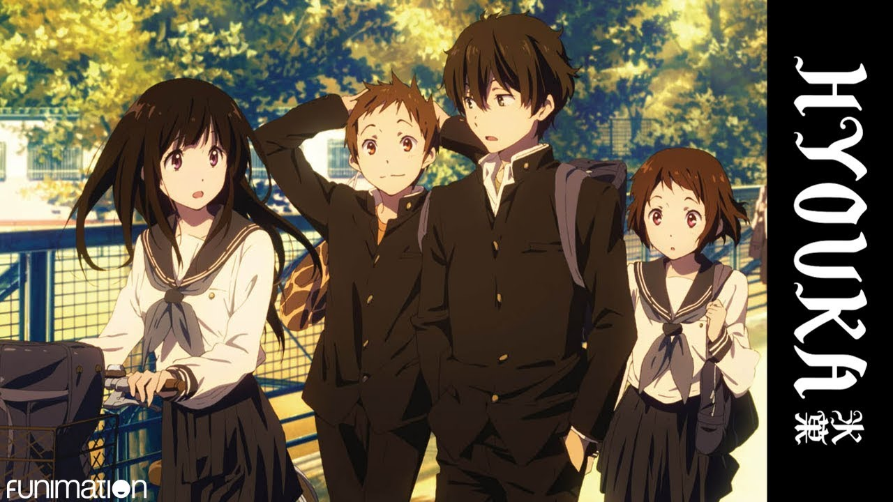

Anime
Apa itu Anime?
Berdasarkan keterangan pada id.wikipedia.com Anime adalah animasi dari Jepang yang digambar dengan tangan
maupun digambar dengan teknologi komputer. Kata anime merupakan singkatan dari "animation"
dalam bahasa Inggris yang merujuk pada kata animasi.
Pada kesempatan kali ini, saya akan me-review atau mengulas beberapa anime yang menurut saya cukup berkesan
bagi saya pribadi. Apa saja anime nya ?
Daftar Anime

Yesterday wo Utatte
Merupakan salah satu anime yang rilis pada musim spring 2020. Mengkisahkan tentang Uozumi Rikuo, Seorang lulusan universitas yang lebih memilih menjadi Part-timer daripada melamar kerja Kehidupan sang tokoh utama mengalami perubahan perlahan-lahan ketika dirinya bertemu dengan salah seorang koleganya Ketika kuliah bernama Shinako Morinome yang kebetulan bekerja di sekitar lingkungannya bekerja ditambah dengan pertemuannya dengan seorang gadis misterius bernama Nonaka Haru membuat kehidupan Rikuo yang awalnya cukup datar-datar saja menjadi lebih berwarna.
Anime ini sangat menarik dan cukup related bagi anda yang berusia 20 tahun-an dan dalam fase mencari jati diri, karena elemen tersebut hadir cukup banyak dalam anime ini. Dimulai dengan kebimbangan Rikuo dalam memutuskan masa depannya seperti apa, hingga konflik percintaan Rikuo dengan Haru serta Shinako.
Anime ini merupakan adaptasi manga karya Kei Toume Sensei yang sudah tamat pada tahun 2015 silam. Jika anda sempat membaca manga-nya mungkin akan ada sensasi yang berbeda karena ada beberapa bagian yang diubah dan disesuaikan antara bagian pada manga dan anime.

Re:Life
Salah satu anime yang menggabungkan antara konsep sci-fi dan kehidupan realitas masa kini. Bercerita seorang pria bernama Kaizaki Arata yang terpaksa menjadi Pengangguran karena suatu insiden. Suatu waktu Kaizaki Arata dihubungi oleh Orang tuanya bahwasanya orang tuanya berhenti mengirim uang untuknya agar membuatnya hidup mandiri, seketika itu pun Kaizaki langsung bingung. Untung saja datang sosok Yoake Ryo, Salah satu pegawai lab Re:Life menawarkan pekerjaan untuknya yaitu menjadi subjek Re:Life. Dan kemudian kehidupan baru Kaizaki pun dimulai.
Anime ini memiliki unsur yang unik karena mencoba menggabungkan sisi sci-fi dengan kehidupan masa kini dengan menciptakan konsep Re:Life. Re:Life disini adalah suatu percobaan untuk subjek agar mengalami Kembali masa mudanya supaya bisa belajar bergaul lagi dengan kehidupan masyarakat. Singkatnya dengan Re:Life seorang bisa Kembali ke masa mudanya untuk belajar Kembali mengenal masyarakat.
Walau ada unsur seinen, anime ini juga masih bisa dinikmati oleh kalangan remaja karena disini kita melihat Kaizaki yang fisiknya berubah menjadi remaja usia 17 tahun harus membaur dalam kehidupan anak-anak 17 tahun. Otomatis membuat Kaizaki harus terlibat di dalamnya.
Anime yang diadaptasi dari Web Comic karya Yayoi Sou ini memiliki rating yang cukup baik di MyAnimeList yaitu 8.06.

Hyouka
Anime yang rilis pada musim semi 2012 ini mengkisahkan tentang Oreki Houtarou, seorang pemuda yang memiliki prinsip menghemat energi yang mana dia tidak akan menghabiskan energinya untuk hal-hal yang tak berguna. Suatu hari, Oreki mendapatkan surat dari kakaknya yang berada di luar negeri untuk mengikuti ekskulnya sewaktu ia SMA dikarenakan jika ekskul itu tidak ada anggotanya, maka terpaksa ekskul itu dibubarkan. Dan dengan berat hati Oreki mengikuti ekskul itu. Ketika Oreki mengikuti ekskul itu, ia bertemu dengan seorang perempuan bernama Chitanda Eru, seorang gadis yang memiliki sifat yang sangat bertolak belakang dengan sifat Oreki yang tidak suka melakukan yang tidak perlu. Dengan sifat Chitanda yang suka penasaran dengan hal-hal disekitarnya membuat kehidupan Oreki perlahan-lahan berubah.
Hyouka memiliki cerita yang tidak membosankan karena di tiap episode kita disuguhkan dengan misteri yang harus dipecahkan oleh Oreki Houtarou selaku tokoh utama, belum lagi kita bisa melihat bagaiman perkembangan karakter tokoh utama seiring bertemu dengan tokoh-tokoh baru yang hadir dalam kehidupannya.